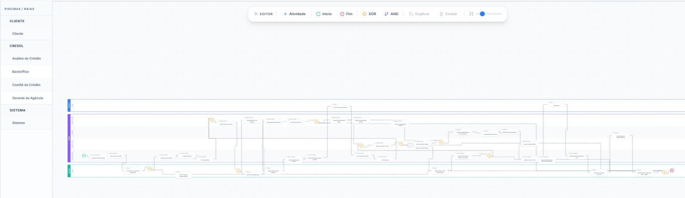

Plataforma de Process Mining e Modelagem BPMN com IA
Uma solução para descobrir, desenhar, documentar, versionar e exportar processos de negócio, combinando agentes inteligentes, modelagem POWL, canvas BPMN e gestão de conhecimento operacional.
O que o projeto entrega
O TTCD Process Mining é uma aplicação web para transformar descrições, entrevistas e históricos de processo em diagramas editáveis. O sistema permite que analistas criem fluxos com auxílio de IA, ajustem o desenho no canvas, registrem metadados de áreas, sistemas e variáveis, salvem versões e exportem artefatos prontos para governança, documentação e interoperabilidade.
Conteúdo
Este documento foi preparado como uma peça de apresentação e também como material imprimível em PDF. O layout usa CSS embutido, páginas A4, controle de quebras e cores configuradas para impressão.
Capacidades principais da plataforma
As funcionalidades foram identificadas a partir do frontend, endpoints do backend e utilitários de geração de documentos, layout e exportação BPMN do projeto.
1Criação assistida por IA
O usuário descreve o processo, escolhe entre fluxo atual AS-IS ou futuro TO-BE e recebe um modelo inicial gerado por agente. Também existe modo de entrevista guiada, no qual a IA coleta detalhes antes de montar o fluxo.
2Importação de históricos
O backend aceita arquivos CSV, XLS e XLSX, identifica colunas prováveis de caso e atividade e retorna um resumo de etapas encontradas para enriquecer o prompt do agente.
3Modelagem lógica em POWL
O agente gera código Python com modelo POWL, executa esse código em fluxo controlado e tenta autocorrigir falhas de execução em até três iterações antes de entregar o layout.
4Canvas visual com BPMN
O frontend usa React Flow para exibir atividades, início, fim, gateways exclusivos e paralelos, conexões animadas, seleção, arraste, duplicação e exclusão de elementos.
5Swimlanes e responsabilidades
A aplicação organiza nós em piscinas e raias, calcula bandas horizontais, reposiciona atividades por área e permite ajustar a altura das raias para melhorar leitura e governança visual.
6Edição e enriquecimento de atividades
Cada nó pode receber nome, pool, lane e anotações. O painel de propriedades complementa a edição com metadados operacionais, apoiando documentação, regras de negócio e padronização.
7Cadastros corporativos
A plataforma mantém cadastros de áreas, sistemas e variáveis/documentos. As áreas também podem ter cores, usadas para contextualizar visualmente as raias no canvas.
8Persistência e reuso
Diagramas são salvos com título, descrição, código POWL, XML, JSON do React Flow, swimlanes e notas. O usuário pode abrir, atualizar, salvar como cópia e excluir processos.
9Exportações de entrega
O sistema exporta imagem PNG, arquivo BPMN 2.0 e documentação Word em versão completa ou simplificada, criando artefatos utilizáveis em apresentações, auditorias e melhoria contínua.
10API operacional
O backend oferece endpoints REST para diagramas, cadastros, chat com agente, upload de logs e exportações, tornando a solução extensível para integrações futuras.
Como a aplicação trabalha
Da entrevista ao TO-BE em um ciclo rápido
Abaixo está um exemplo aplicado ao mapeamento da esteira AS-IS de crédito PJ, a partir de uma transcrição realista de reunião entre Projetos/Estratégia, Gerência de Agência e Análise de Crédito. O objetivo é mostrar como uma conversa longa é sintetizada em processo, desenho, documentação e proposta de melhoria.
1. Entrevista recebida
Entrada resumida a partir de uma transcrição de 21 minutos sobre a esteira AS-IS de crédito PJ:
2. Desenho AS-IS desenvolvido
Print real do diagrama criado no TTCD Process Mining a partir da transcrição sintetizada:

3. Diagnóstico AS-IS
- 45% das propostas chegam com divergência entre dados digitados e documentos anexados.
- A integração Serasa/SCR pode deixar propostas paradas em “Aguardando Bureau”.
- O status “Em Exigência” congela o SLA da análise, mas transfere dias de espera para a agência.
- Operações fora da alçada automática dependem do Comitê, que se reúne apenas duas vezes por semana.
- Condicionantes de garantia criam novo ciclo de negociação com o associado antes da formalização.
4. TO-BE proposto
- Adicionar agente de pré-validação documental antes do gerente enviar a proposta para análise.
- Aplicar leitura automática de DRE, balanço, faturamento e assinatura do contador.
- Criar fallback e fila monitorada para falhas de bureau, com retentativas automáticas.
- Classificar exigências por causa raiz para reduzir retrabalho recorrente nas agências.
- Antecipar minutas e checklist de garantia para propostas com alta probabilidade de aprovação.
Arquitetura e tecnologias
O projeto é uma aplicação full stack com frontend moderno, backend Python orientado a API, orquestração de agentes e infraestrutura local via Docker Compose.
Frontend
Interface web para criação, edição, visualização e exportação dos processos.
Backend
API, persistência, upload de arquivos, geração de documentos e exportação BPMN.
IA e Process Mining
Geração do modelo, execução, validação, layout e interoperabilidade de processos.
Dados
Armazenamento de diagramas, usuários e cadastros de referência.
DevOps
Ambiente reproduzível com serviços isolados para banco, API e frontend.
Contratos de API
Endpoints REST para manter a aplicação modular e preparada para evolução.
Benefícios para operação, gestão e melhoria contínua
AAcelera o mapeamento de processos
A criação por descrição, entrevista ou histórico reduz o esforço inicial de levantar fluxos, permitindo que o analista comece a partir de uma versão já estruturada.
BPadroniza conhecimento operacional
Atividades, áreas, sistemas, variáveis e anotações ficam registrados no mesmo artefato, reduzindo perda de informação entre entrevistas, desenho, documentação e execução.
CAumenta clareza de responsabilidades
As swimlanes evidenciam quem faz cada etapa, em qual área, com quais sistemas e documentos. Isso ajuda a encontrar gargalos, sobreposições e pontos de transferência.
DConecta descoberta e documentação
O mesmo fluxo que nasce no canvas gera documentos Word, imagens e BPMN, evitando retrabalho manual para preparar materiais de comitê, auditoria, treinamento ou handoff.
ECria base para melhoria AS-IS e TO-BE
A distinção entre processo atual e futuro favorece análises comparativas, identificação de oportunidades e desenho de estados desejados com rastreabilidade.
FFavorece interoperabilidade
A exportação BPMN 2.0 permite levar o processo para ferramentas especializadas, enquanto o JSON preserva o layout editável dentro da aplicação.
GReduz dependência de especialistas em notação
O agente traduz linguagem natural em estrutura processual, ajudando pessoas de negócio a participar mais cedo da modelagem sem exigir domínio prévio de POWL ou BPMN.
HFortalece governança e reuso
A persistência de diagramas e cadastros transforma cada mapeamento em ativo reutilizável, versionável e disponível para evolução contínua.
Por que o projeto importa
O TTCD Process Mining transforma a atividade de mapear processos em um fluxo mais rápido, visual e rastreável. Ele une a capacidade analítica de agentes de IA com uma interface de edição BPMN e exportações corporativas. O valor aparece na redução de tempo de levantamento, na melhoria da qualidade da documentação, na clareza das responsabilidades e na criação de uma base viva para gestão por processos.